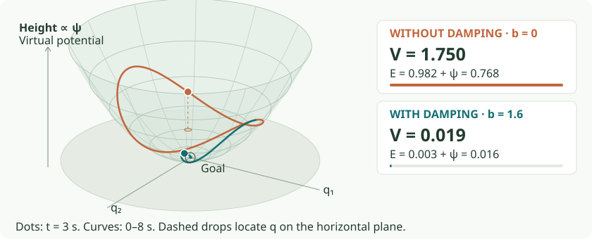

Start with the design problem
Two design goals: preserve geometry, choose timing
Imagine a robot reaching around a cup. We want to design how its motion bends around the cup, then control how quickly it follows that route. Speeding up should not accidentally turn the route into a different curve. Slowing down should not erase the steering behavior we designed.
These are two distinct questions. Geometry tells us which spatial paths motion follows. Timing tells us how the robot progresses along a selected path. A geometry is a family of paths selected by starting configuration and direction, not one stored trajectory. The construction at the heart of this tutorial lets us keep that family while choosing a different clock.
The two goals
Keep the route. Design the clock.
For one path, write q(t)=r(\sigma(t)). The curve r describes configurations along the route; the increasing function σ(t) specifies our progress. A prime on r will mean differentiation with respect to σ.
Goal 1: preserve geometry when timing changes. We will derive the HD2 scaling of a generator h, then show that adding acceleration parallel to velocity can retime its paths. This argument uses the chain rule; it does not assume energy conservation.
Goal 2: choose a useful timing rule along that geometry. We will first explore the simplest choice, constant ordinary speed. Then we will generalize it to conserving a chosen virtual energy. Energization computes the required clock adjustment as an acceleration.
Conserving energy is one structured way to choose timing. It is not the reason the geometry survives. Arbitrary clocks need not conserve energy, and energy-conserving motion need not have speed-independent paths.
Why is this useful beyond an ordinary combination of motion requests?
An RMP, or Riemannian Motion Policy, represents an acceleration request together with a metric expressing its priority. For two components in the same coordinates with scalar weights, their compromise is familiar:
This resolves an instantaneous disagreement. Properties such as geometry preservation, energy conservation, and goal convergence require additional structure in the resulting differential equation. Particular RMP constructions can have stability guarantees; fabrics provide a way to design these geometric and energy properties explicitly, using compatible task-combination algebra.
We will first establish the two-goal construction for one motion generator. We will then combine components and add purposeful goal forces and damping. Those later operations need their own analysis: a goal force can intentionally change the underlying geometry, and convergence is a further property to prove.
The whole argument in one page
From an acceleration rule to geometry with a chosen clock
1. Describe motion. Let q be configuration, v=\dot q velocity, and \ddot q=h(q,v) an acceleration rule. Given an initial state, this rule generates a timed trajectory. We want to distinguish its spatial geometry from its timing.
2. Preserve the geometry. Replaying a motion twice as fast doubles velocity and quadruples acceleration. Requiring the same generator to admit that replay leads to h(q,cv)=c^2h(q,v), or HD2. A nonuniform replay adds a term parallel to velocity: a=h+\alpha v. The generator supplies the geometry and a baseline timing; α changes that timing. No energy argument is needed here.
3. Specify what the clock should achieve. The simplest target is constant speed, expressed by conserving E=\tfrac12\|v\|^2. More general energies weight motion by configuration and direction. Requiring a chosen E to remain at its initial value determines a clock along a fixed regular path.
4. Derive the energy tools. A mechanics interlude explains where an energy-rate identity comes from and why natural mechanics ties an energy to a particular geometry. Chapter 2 extends the account from ordinary squared speed to Riemannian and Finsler energies. We keep useful scaling and positivity properties while widening directional expressiveness.
5. Compute the clock locally. Choose h and E, substitute a=h+\alpha v into the energy-rate identity, and solve \dot E=0 for α. This is energization. It preserves the chosen geometry by Step 2 and conserves E by a separate cancellation. We can execute the resulting policy without precomputing a whole path.
6. Assemble and give purpose. Task maps translate requests to joint coordinates; compatible weighting preserves HD2 structure during combination. Goal potentials and damping then initiate motion and let it settle. An energy inequality plus regularity and boundedness assumptions establishes convergence to a stationary set, not automatically a global goal.
The logical order is geometry-preserving freedom → a criterion for timing → energization → composition and purposeful forcing. Classical mechanics motivates and supports the energy construction; conservation does not prove the first step.
Read the main text in order. The expandable notes supply prerequisite mathematics and longer proofs at the point of use. Printing includes them. Interactive plots expose the quantities used in the argument. The primary sources are linked beside the corresponding derivations, beginning with the geometry and clock-equivalence construction.
Chapter 1 · Reference R0–R1
Preserve geometry while changing the clock
Our first goal is to change the timing of motion without changing its spatial geometry. We will derive the required scaling and the allowed clock adjustments directly from kinematics. We do not yet choose an energy, invoke a mechanical law, or require conservation.
First distinguish the object from its clock
A configuration q might contain the two coordinates of a point, or seven robot joint angles. A trajectory is a function q(t). Its path is the curve it draws after we discard the timestamps. Two trajectories can trace the same path at different speeds. A geometry of paths specifies an entire family of curves: for each starting configuration and direction, which curve should the motion follow?
The word “geometry” in the fabrics papers is sometimes used as shorthand for the differential equation that generates this family. A single path is a member of the geometry, rather than the whole geometry. This distinction matters because fabrics design the rule for motion from many possible states, rather than store one route.
Background: vectors, dots, and a second-order equation
A vector is a list of coordinates. For a moving point, q=(x,y)^T. A dot means a time derivative: \dot q=(dx/dt,dy/dt)^T; two dots mean acceleration. A second-order equation specifies \ddot q from q,\dot q. Together with an initial position and velocity, a sufficiently regular rule determines a local trajectory. “Autonomous” means the rule has no separate explicit dependence on time: the same state produces the same acceleration.
We use h for an acceleration, so our equation is \ddot q=h. Some papers instead write \ddot q+h=0. Their h has the opposite sign. Keep the equation beside the symbol when comparing notation.
Notation: dot products, norms, and projections
We write vectors as columns. The superscript T turns a column into a row, so v^Ta=\sum_jv_ja_j is the dot product. It is zero for perpendicular vectors. The norm \|v\|=\sqrt{v^Tv} is ordinary length. For a unit vector e, ee^Tz=e(e^Tz) extracts the part of z along e. The identity matrix I leaves a vector unchanged, so (I-ee^T)z removes that part. These are the projections we will use to separate turning from speeding up.
The square is forced by the chain rule
We want one motion rule to describe a route independently of how quickly we travel along it. To turn that design goal into mathematics, ask: if a motion is allowed by our rule, should a faster replay of that same motion also be allowed?
Imagine q(\tau) as a recording: give it a timestamp τ, and it returns the configuration shown in that frame. At 2× playback, one second on our wall clock takes us to the frame originally recorded at two seconds, so q_2(1)=q(2). At a general playback rate c>0, the recording's timestamp is \tau=ct, giving q_c(t)=q(ct). We change the time input to q; we do not multiply the positions by c.
One recording. Two playback clocks.
Now ask what acceleration the faster replay requires at a matching recorded frame. We compare the faster motion at wall time t with the original at recording time ct. Each time derivative contributes one factor of c through the chain rule: velocity gets one factor, and acceleration gets a second:
We want this faster recording to satisfy the same nominal acceleration rule. The original rule says \ddot q(ct)=h(q(ct),\dot q(ct)). The faster one must say \ddot q_c=h(q_c,\dot q_c). Substitution gives the condition:
This is homogeneity of degree two in velocity. “Homogeneous” describes a scaling rule; “degree two” means the factor is squared. No quadratic polynomial is required. For example, \|v\|^2b(q,v/\|v\|) is HD2 for any suitable direction-dependent vector function b. It can express much richer behavior than multiplying velocity by a fixed matrix.
Following the same route is weaker than an exact faster replay
HD2 guarantees that replaying a solution at a constant multiple of its original speed satisfies the same unchanged rule. “Sufficient” means HD2 guarantees this property. “Necessary” means that demanding this exact property for every initial state forces the rule to be HD2. But a motion can stay on the same geometric route without obeying that exact playback schedule.
Consider damping in robot joint coordinates, with a fixed constant \beta>0:
Differentiate the formulas to check them. Every displacement is a scalar multiple of the same initial vector v_0, so the motion stays on a straight line in joint space while slowing down. For an initial joint-velocity ratio v_{0,2}=2v_{0,1}\ne0, for example, every visited configuration satisfies q_2-q_{0,2}=2(q_1-q_{0,1}). Yet the rule is not HD2: doubling v doubles its requested acceleration rather than quadrupling it.
We can locate the failure exactly. Replay that damped motion twice as fast by setting r(t)=q(2t). The chain rule gives
The faster replay needs damping coefficient 2\beta, whereas the original equation uses β. Its straight-line shape survives; it does not satisfy the same unchanged equation. Damping also limits the distance traveled: q(t)\to q_0+v_0/\beta. Thus “same geometry” here concerns the straight route over the portion traversed, not a claim that a damped trajectory visits every point reached by an indefinitely coasting one.
The HD2 rule \ddot q=0 generates straight lines at constant speed. Adding -\beta\dot q gives another way to traverse those lines. This is what it means to choose an HD2 representative of a geometry: one motion rule generates the paths, and an additional timing rule can change how they are traversed. We will prove the curved-path version below.
What specifies geometry, speed, and acceleration?
An acceleration rule determines the evolving motion; geometry and timing describe different aspects of that motion. Given a=h(q,v) and an initial state, we integrate \dot v=a and \dot q=v. We do not independently specify the velocity at every instant. To see how acceleration affects both the route and its timing, separate the velocity's magnitude from its direction.
Parameterize a curve by distance \ell along it. Write q(t)=r(\ell(t)), and let s=\dot\ell be speed. The unit tangent is T=dr/d\ell. Applying the chain rule twice gives:
The first term changes speed along the tangent. The second changes direction as we travel along the curve. Since T^TT=1, differentiating with respect to \ell gives T^T(dT/d\ell)=0: the second term is perpendicular to motion. On a circle of radius R, its magnitude is s^2/R. That familiar centripetal acceleration is the same speed-squared requirement, now derived for any smooth curve.
A counterexample: conserving squared speed does not preserve the geometry
Consider a virtual motion rule in two joint coordinates: a=\lambda(-v_2,v_1)^T. Its acceleration is perpendicular to v, so \frac{d}{dt}(\tfrac12\|v\|^2)=v^Ta=0 and speed s=\|v\| stays constant. If λ is a positive constant, the acceleration magnitude is λs. Equation (2) then gives the curvature of its joint-space path:
Different initial speeds give different turning radii. Conserving energy did not by itself give a speed-independent geometry. Now choose \lambda=\kappa s, with constant \kappa>0:
This rule is HD2 and has circular joint-space paths of radius 1/\kappa. The constant κ sets curvature; the initial position and direction select a particular circle, and initial speed sets the rate of traversal. These are curves in the plane of two joint coordinates, not necessarily circles traced by the end effector.
Experiment 1 · Change the exponent, then change the speed
Use \ddot x=0,\ \ddot y=\kappa\dot x^p, starting rightward at speed s. Orange starts at speed 1; teal uses your speed.
Why tangential acceleration changes only the clock
Retiming an HD2 solution changes its required acceleration by a term parallel to velocity. Conversely, a suitable tangential term can locally be realized by retiming. We will derive both directions. This is the precise sense in which geometry and timing separate, and the reason we can later control energy without replacing a chosen geometry.
Choose a new clock and calculate the acceleration it requires
Let r(\tau) be a recorded solution of r''=h(r,r'), where h is HD2 and primes mean derivatives with respect to the original time τ. Replay it using a smooth new clock \tau(t):
Because the clock is increasing, we visit the recorded configurations in the same order. The curve is unchanged over the portion of the recording we traverse. The first derivative tells us the new velocity; the product rule then gives its acceleration:
Substitute the recorded motion equation into the first term. The HD2 property turns it into the generator evaluated at the new velocity:
For the second term, use r'=v/\dot\tau. Together these give
Every step is an equality. The HD2 term automatically adjusts to the velocity needed at the new playback rate. The remaining acceleration is parallel to v and accounts for the changing playback rate. For a constant multiplier \tau=ct, \ddot\tau=0, so the extra term vanishes and the same unchanged equation suffices. For a changing playback rate, it generally does not vanish.
Choose a tangential term and recover its clock
We can reverse the construction. Suppose we want the added acceleration to be \alpha v. Equation (3) tells us to choose a clock satisfying
For a prescribed function α(t), set w=\dot\tau. The equation \dot w=\alpha(t)w has the solution
Starting with \dot\tau(0)>0, the clock rate stays positive while the expression remains finite. Integrating it gives τ(t). Thus the tangential adjustment corresponds to an actual increasing clock, not just an analogy. When α depends on (q, v), evaluate it along the retimed state (r(\tau),r'(\tau)\dot\tau); this gives a coupled clock equation with the same local interpretation under the usual existence and regularity assumptions.
The generator remains HD2; the full retimed policy need not
We keep h unchanged, but the complete policy is now a=h(q,v)+\alpha v. A constant damping choice \alpha=-\beta generally makes this full policy non-HD2, even though it follows the base generator's paths with a slowing clock. HD2 is a property of the base rule, not the operation of changing time.
Nor does h necessarily contribute only sideways acceleration: it can already change speed. It specifies a family of paths and one way to traverse them; αv changes that traversal. The proof says the path geometry survives this change. Adding tangential acceleration to an arbitrary non-HD2 rule does not generally have that guarantee.
When is the full autonomous policy still HD2?
For nonzero v, scaling the full rule gives h(q,cv)+\alpha(q,cv)cv. Since h is already HD2, the whole expression scales by c^2 precisely when
Thus α must be HD1 in velocity. The energization construction later satisfies this under its stated homogeneity assumptions; an arbitrary speed-control term need not.
Go deeper: what equation describes the geometry without choosing a clock?
Let \hat v=v/\|v\| and P_\perp=I-\hat v\hat v^T. This matrix removes the component of a vector parallel to motion. For our HD2 base generator h, the equation
says the transverse acceleration must match h, while tangential acceleration is free. The family h+\alpha v therefore describes its same local oriented paths. This is often called projective equivalence. The argument requires nonzero velocity and a regular increasing clock; it does not describe stopping, reversing time, or choosing a new departure direction at rest. A slowing clock can approach a finite limit, so a retimed motion need not traverse the entire original path. Positive homogeneity also need not imply symmetry under v\mapsto-v.
What have we proved without an energy?
We have achieved Goal 1: an HD2 generator plus a regular tangential adjustment describes the same local oriented geometry with different timing. Neither the constant-replay proof nor the nonuniform-clock proof used conservation. We now need a criterion for choosing α, which is Goal 2.
The parabola experiment makes the distinction concrete. For h=(0,\kappa v_x^2)^T, the rule is HD2 and its rightward-starting paths satisfy y=\kappa x^2/2 independently of starting speed. But its ordinary squared-speed account changes:
This is generally nonzero. The geometry property holds without conserving this chosen E. Conversely, the rotating-velocity example in the optional note conserves E but changes its turning radius with starting speed. The two requirements need separate arguments.
For Goal 2, we will choose a clock that conserves a useful motion account. The following mechanics interlude develops the energy tools and their origin; it is not a missing step in the geometry proof. Chapter 2 then selects the account, and Chapter 3 computes the corresponding clock correction. Source: nonlinear geometries and the clock-equivalence theorem.
Mechanics interlude · Supporting the timing construction
What robot mechanics gives us—and what it ties together
We have already proved how to preserve geometry under a clock change. We now need an energy account to choose that clock. Classical robot mechanics provides a familiar starting point and the derivative identities we will generalize. This interlude derives those tools from forces and moving links so the later formulas have an origin.
Natural mechanics packages a geometry and an energy together. Its motion equation implies both a conservation law and HD2 scaling, through separate calculations. Fabrics will keep the energy structure while allowing a different chosen geometry. As we derive the physical model, distinguish “this energy is conserved” from “this particular equation generates its natural geometry.”
Start with the arm's configuration and moving links
For a seven-joint arm, q=(q_1,\ldots,q_7)^T is the column of joint angles. Write v=\dot q for joint velocities and a=\ddot q for joint accelerations. The superscript T transposes a column into a row; v^T\tau=\sum_jv_j\tau_j is a scalar. With joint torques τ, that scalar is mechanical power: torque times angular velocity, summed over the joints.
Moving one joint moves several links, and moving two joints together can reinforce or oppose a link's velocity. The robot's kinetic energy therefore contains both squared joint velocities and cross terms:
The symmetric inertia matrix M collects those coefficients. Its dependence on q reflects the changing arm configuration. For an ordinary nondegenerate arm, it is positive definite: v^TMv>0 whenever v is nonzero. That means every nonzero joint motion has positive kinetic energy, and M has an inverse.
From kinematics to M: why moving links produce this matrix
For link ℓ, kinematics gives its center-of-mass velocity \dot p_\ell=J_\ell(q)v and angular velocity \omega_\ell=J_{\omega,\ell}(q)v. A Jacobian J is the matrix of derivatives mapping joint velocities into these spatial velocities. Summing translational and rotational kinetic energies gives
Here m_\ell is the link mass and I_\ell its rotational inertia about its center of mass, expressed in the same frame as its angular velocity. This is why the energy is quadratic in joint velocities even though the links' positions depend nonlinearly on the angles.
Where does the motion equation come from?
Knowing the kinetic energy does not yet tell us which way the arm accelerates. We need a law of motion. The physical starting point is Newton's second law: the total force on each piece of the robot equals its mass times its acceleration. Our task is to express that law in the joint angles q. We will derive the equation first, then check its energy balance.
Begin with one horizontal robot link of length ℓ, carrying a point mass m at its tip. Ignore the link's own mass for this first calculation. If its joint angle is q, the tip's tangential acceleration is \ell\ddot q. Newton's law in that direction, followed by the definition of torque about the joint, gives
I is rotational inertia. We have obtained I\ddot q=\tau_{\mathrm{net}}, the rotational version of force = mass × acceleration. For example, m = 1 kg and ℓ = 0.5 m give I=0.25\ \mathrm{kg\,m^2}; a net joint torque of 0.5 N·m produces \ddot q=2\ \mathrm{rad/s^2}. The tip also has an inward acceleration \ell\dot q^2. Its corresponding radial force passes through the joint, so it contributes no torque about that joint.
Several joints: the changing kinematics adds a term
To extend that calculation, imagine dividing every robot link into small material pieces. Piece i has fixed mass m_i and position r_i(q). Summing over all pieces accounts for both link translation and link rotation; it is not the approximation of placing each whole link at its center of mass. For a continuous mass distribution the sum becomes an integral.
The Jacobian J_i=\partial r_i/\partial q maps joint velocity to the piece's velocity. Differentiating once more gives
The first term comes from changing joint velocities. The second comes from the changing map J itself: the links rotate as the arm moves. Even constant joint velocities can produce changing Cartesian velocities. Newton's law must include both accelerations.
We also need to express a spatial force as joint torques. Imagine any tiny, mechanically allowed joint displacement \delta q, such as turning just one joint. It moves piece i by \delta r_i=J_i\delta q to first order. A force f_i does the work
Joint work is torque dotted with joint displacement. Therefore the torque contribution equivalent to f_i is J_i^Tf_i. This equality is required for every allowed \delta q, so it determines each torque component, rather than just its work along the current motion. Background: the Jacobian-transpose force map.
Apply this map to the Newton equations for all material pieces and add. For ideal rigid links and frictionless joint constraints, the constraint forces do no net work on allowed motions; their summed contribution vanishes. The remaining generalized force Q_{\mathrm{net}} is the column of net applied joint torques, including the joint-coordinate contributions of gravity and damping:
Now Ma+\xi has an origin: it is the total mass-times-acceleration expressed as joint torques. The inertia matrix M also appears in the kinetic energy because E=\tfrac12\sum_i m_i\|J_i v\|^2=\tfrac12v^TMv. The velocity-dependent term ξ comes from the second part of the kinematic acceleration. It is neither friction nor a corrective force invented by the controller.
Why can we discard constraint forces, but not motor torques?
An ideal constraint keeps the robot assembled without doing work on its permitted motions. At a revolute joint, the connected link points have the same translational displacement, so equal-and-opposite joint reaction forces have cancelling work. The relative rotation about the joint axis is allowed; an actuator torque about that axis does work on this rotation and therefore remains in Q_{\mathrm{net}}. Friction also acts along allowed motion, so it must be modeled separately. “Ideal constraint” is an explicit modeling assumption, not a statement that every internal force can be ignored.
Add gravity and damping to complete the model
Separate the applied torques into motor or other commanded torques τ, conservative forces described by a potential U, and viscous damping. A conservative force does work \delta W=-\delta U=-(\nabla U)^T\delta q, so its joint torque is -\nabla U. Damping is modeled here as -Bv. Substituting Q_{\mathrm{net}}=\tau-\nabla U-Bv into our Newton equation gives
U can be gravitational potential energy; its gradient lists the derivatives with respect to the joint angles. The damping matrix B is symmetric positive semidefinite, meaning v^TBv\ge0. The word ideal refers to the modeling assumptions: rigid links, ideal joint constraints, smooth continuous motion without impacts, and the chosen damping law. It does not mean that the robot follows a desired motion perfectly. Equation (M2) predicts acceleration given the current state and applied torques; it is not yet a controller. The usual robot dynamics equation has this structure. Source: MIT's manipulator equations.
Connect the Newton equation to the energy account
We derived ξ, pronounced “xi,” from the changing link kinematics. It is often written C(q,v)v in robotics. To calculate energy rates conveniently, express it in terms of the same M and E:
In \nabla_qE, differentiate with respect to joint angles while holding v fixed. The dot on M instead means its rate of change along the moving arm. The next expandable calculation proves (M3) from our Newton construction. Chapter 2 will recover it through the Euler–Lagrange language and extend that construction to the energies used by fabrics.
Derive ξ = Ṁv − ∇E from the kinematic expression above
Differentiate M=\sum_i m_iJ_i^TJ_i with the product rule:
The last sum is ξ. We need to show that the first is \nabla_q E. Denote column j of J by J_{:,j}. Because J is the derivative of a smooth position map, its mixed position derivatives agree:
Differentiate the kinetic energy with respect to q_j, keeping v fixed:
This holds for every j, so \nabla_qE=\sum_i m_i\dot J_i^TJ_i v. Subtract it from the product-rule expression for \dot Mv to obtain (M3). We assume smooth, time-independent link kinematics; no energy-conservation assumption was used to select the motion equation.
First differentiate (M1), accounting for both changing velocity and changing inertia:
The second equality differentiates E through its q input alone. It makes v^T\xi=\tfrac12v^T\dot Mv. Thus the inertial term supplies exactly the part of the energy rate that v^TMa misses.
Now define total mechanical energy H=E+U. Substituting (M2) gives the complete balance:
With no applied torque and no damping, \dot H=0: kinetic and potential energy can trade places, but their sum stays fixed. With no applied torque and positive damping, \dot H\le0: mechanical energy is dissipated. An applied torque adds or removes energy according to its power v^T\tau. These are consequences of the motion equation, not assumptions that an arbitrary controller automatically satisfies.
Define natural motion by stating what we remove
We want to isolate the motion caused by the robot's inertia and joint kinematics, before adding a goal or damping. The full mechanical equation (M2) allows all of these effects. For the natural motion studied here, impose the additional conditions
A horizontal arm with constant gravitational potential realizes the first condition; choose the irrelevant constant U = 0. These conditions are more restrictive than saying “ideal mechanics.” Rigid links and ideal joint constraints do not, by themselves, remove gravity, applied torques, or a separately modeled damping force.
Substitute these conditions into (M2). The potential, applied-torque, and damping terms vanish, leaving
The word “motion” means the solution of a specific initial-value problem:
We specify the starting configuration and velocity, then this equation determines how they evolve. There is no target configuration in the equation. At rest, \xi(q,0)=0, so the arm remains at rest. With nonzero initial velocity, its joint velocities can change through inertial coupling even though no torque is applied. “Natural” therefore does not mean zero acceleration.
Its energy statement follows by substituting the same conditions into (M4):
Vary the initial configuration and velocity and discard the timing of each solution: the resulting family of paths is the system's natural geometry. Since (M3) determines ξ from M, choosing M already determines this acceleration rule. Conservation alone is weaker: one scalar equation \dot E=0 does not uniquely determine all acceleration components.
We can make this coupling visible in a two-joint robot. Use two massless links of length 1 m, with a 1 kg point mass at the elbow and another at the end effector, moving horizontally. Let q₁ be the first link's angle and q₂ the elbow angle relative to the first link. Its inertia and inertial torque are
Derive the two-joint example directly from its link velocities
The point masses are at p_1=(\cos q_1,\sin q_1) and p_2=p_1+(\cos(q_1+q_2),\sin(q_1+q_2)), in meters. Differentiation gives
With both masses 1 kg, add half of each squared speed:
Reading its coefficients gives M in (M6). Its determinant is 2-\cos^2q_2\ge1 and its first diagonal entry is positive, so it is positive definite at every configuration. To obtain ξ, use (M3):
Subtracting \nabla_qE from \dot Mv gives the two entries of ξ above. This example uses idealized robot link masses; it is not a numerical model of the Franka.
Start with q=(0,\pi/2) and v=(1,0) rad/s: the shoulder is moving and the elbow initially has zero angular velocity. Then
The elbow starts accelerating despite zero applied joint torque. The coupled arm redistributes motion while conserving E=1.5 J. Now imagine a virtual mechanical model of the same joint coordinates with constant unit inertia \bar M=I. Its corresponding \bar\xi=0, so its unforced rule gives a=0: both joint velocities remain constant. The initial acceleration difference has an elbow component, not just a component along the starting velocity, so these models generate different joint-space paths, not merely different timings.
Same initial joint motion. Different natural paths.
The design conflict: inertia as a priority matrix
We now move from predicting the physical arm to designing virtual motion components. There are two separate choices to keep track of: choosing a virtual inertia, and adding forces. We will change them one at a time.
First change M, while keeping potential forces and damping absent
For component i, choose a smooth symmetric positive-definite matrix M_i(q) and use it to define a virtual kinetic energy. All components are evaluated at the same joint state (q, v):
This is still the potential-free, undamped construction. The virtual matrix need not equal the physical arm's inertia, and choosing it does not change the hardware's mass. It defines a motion rule whose own E_i is conserved when that component acts alone.
To combine requests in the same joint coordinates, use the matrix-weighted force balance \sum_i M_i(a-a_i^{\mathrm{natural}})=0. Solving gives
The matrices weight the components' acceleration requests, so they also serve as priorities. But a position-dependent change in M_i changes its derivatives, hence \xi_i and generally a_i^{\mathrm{natural}}. A matrix chosen to give a component more influence also helps determine what motion it requests. This is the design coupling we want to loosen. A constant overall rescaling is a special case: it changes the weight but leaves that component's natural acceleration unchanged.
Now change the force assumptions: add a goal potential and damping
Natural motion alone has no destination and does not dissipate its motion energy. To construct a component that seeks a goal and can settle, we now allow a potential force and damping. These were both absent above. Choose a time-independent virtual potential \psi_i(q) and a symmetric positive-semidefinite damping matrix B_i. The component equation becomes
Here a_i is the complete acceleration requested by component i, including the added forces. There is no additional driving torque beyond those displayed. The minus sign and inverse follow by moving ξ to the right and solving for acceleration. In particular,
The symbol ψ, pronounced “sigh,” assigns a scalar potential value to each configuration. It is designed as part of this virtual motion model; it is not an extra physical gravitational potential added to the real arm. For one joint targeting q^\star, a simple choice is
This virtual torque points toward the target. If M_i=m is constant and B_i=b\ge0, then ξ is zero and the acceleration is a_i=(k/m)(q^\star-q)-(b/m)v. We have added goal attraction and dissipation to the earlier natural-motion rule.
The energy claim must change too. For this component acting alone, use its motion equation and the chain rule:
With a potential but no damping, the conserved quantity is E_i+\psi_i; kinetic energy alone can change. With damping, that total is nonincreasing. This identity alone does not prove arrival at the target; the convergence conditions are developed in Chapter 5.
What changes when several forced components are combined?
Use their complete requests a_i in the same force balance:
Because the energy and its derivatives add, define E_\Sigma=\sum_iE_i, \psi_\Sigma=\sum_i\psi_i, and B_\Sigma=\sum_iB_i. The combined motion satisfies
Individual component energies need not obey their isolated balance under the shared acceleration; this is a statement about the summed account. These formulas assume the components already use the same coordinates. Chapter 4 derives the mapping needed when they use different task coordinates.
The change of assumptions is now explicit: first, physical inertia → chosen virtual inertia; then, potential-free and undamped motion → motion with a chosen potential and damping. We retain smooth ideal mechanical models throughout. The inertia–priority coupling already exists in the natural rule, before these extra forces are added. Source: classical energy shaping and its limitations.
What freedom can we add without losing the energy proof?
We now have a precise design question: can we keep the same chosen energy E and inertia M, but make the robot follow a different motion from its natural motion? This would let us use M to express priorities without accepting only the natural acceleration that M determines. We want to keep the energy guarantee while gaining freedom over how the robot moves.
Could we change the natural motion simply by changing M?
Yes. Changing the inertia is already a valid design tool. Because E=\tfrac12v^TMv and \xi=\dot Mv-\nabla_qE, changing M generally changes a_{\mathrm{natural}}=-M^{-1}\xi. It also changes the energy account and, when M weights a component in a combination, its priorities.
The reason to seek another tool is that we might already like those weights but dislike the natural motion they produce. For M = I, the natural rule gives zero acceleration and straight paths in joint space. We may want curved motion while keeping the same energy E=\tfrac12\|v\|^2. The zero-work modification below provides that additional freedom.
Changing M does not always change the natural rule. A constant positive overall multiplier c also multiplies ξ by c, so
Thus M is not exclusively a speed or energy parameter: it participates in the natural geometry too. Here we are changing a virtual model, not the real robot's physical mass.
To isolate this question, set the goal potential and damping aside again: \psi=0 and B=0. Keep the same smooth, positive-definite M(q), the energy E=\tfrac12v^TMv, and its associated ξ. We will first recall the unforced rule, then explicitly allow a new applied force.
Natural motion imposes more than energy conservation needs
The natural acceleration makes an entire vector vanish:
But the energy-rate identity (M4), valid for any acceleration a, is
For energy to remain constant, this last expression must be zero. That is a weaker requirement: the vector Ma+\xi need not vanish; only its dot product with velocity must vanish. A nonzero vector can be perpendicular to v and therefore have a zero dot product with it.
This is the freedom we were looking for. Natural motion specifies every acceleration component. Energy conservation fixes only one scalar combination of those components.
How much freedom does one scalar condition leave?
Freeze the current q and a nonzero v, and let the robot have n joint coordinates. Then v^TMa=-v^T\xi is one linear equation in the n components of a. Because M is positive definite and v is nonzero, its coefficient row v^TM is nonzero. The solutions therefore form an (n-1)-dimensional affine plane: the natural acceleration plus all changes satisfying v^TM\Delta a=0.
For seven joints, there are six instantaneous directions of acceleration change compatible with this energy condition. This is a statement at one state, not six extra joints or a guarantee that all such motions are safe. At v = 0 the power equation becomes zero automatically; it does not by itself specify a valid motion law through rest.
Add a force that changes motion but does no work
Call the new term \tau_{\mathrm{bend}}. We now replace the earlier assumption of no applied force with
Its dot product with velocity is its power: the rate at which it adds energy. A force can change acceleration while contributing zero power. If we choose it so that
the original energy proof still works: substitute the new motion equation into the same energy-rate identity, and the derivative is still zero. We have changed the motion without changing the energy account. In a virtual robot model, this is a designed force-like term; it is not automatically a torque command sent to the hardware.
Which quantity specifies acceleration, velocity, and geometry?
The complete rule a(q,v)=-M^{-1}\xi+M^{-1}\tau_{\mathrm{bend}} computes acceleration from the current state. Velocity then evolves from that acceleration; it is not an independently assigned command in this construction:
Given an initial configuration and velocity, a sufficiently regular rule determines the trajectory. Geometry describes the shape of its paths; timing describes progress along them. The zero-work condition restricts the acceleration we may choose, but does not choose one uniquely. Chapter 1 will derive the separation between turning and changing speed, and state when changing timing preserves the same geometry.
A two-joint example: zero power does not mean zero acceleration
Use two robot joint coordinates with a deliberately simple virtual inertia M=I, the identity matrix. This is a chosen motion model, not the physical inertia of the two-link arm above. Because M is constant, ξ = 0, so
At an instant when joint 1 is moving and joint 2 is still, choose
The natural rule would keep both joint velocities unchanged. The modified rule accelerates joint 2, turning the direction of motion in joint-configuration space, while the instantaneous energy rate remains zero.
There is a catch: keeping that same force (0,2)^T forever would not conserve energy. Once joint 2 starts moving, the force would do positive work. The condition must keep holding as velocity changes. One way to ensure that is to update the force using the current velocity:
The vector on the right is v rotated by 90° in this two-coordinate plane. The scalar λ sets its signed strength. For any smooth choice of λ, the power cancels at every state:
As joint 2 gains speed, the force also acts on joint 1; it redistributes the two contributions to E instead of continually adding energy. In this identity-inertia example, the joint-velocity norm stays constant. For a general configuration-dependent M, the conserved quantity is \tfrac12v^TM(q)v, not necessarily the ordinary velocity norm.
For a general M, which vectors must be perpendicular?
The zero-power condition is v^T\tau_{\mathrm{bend}}=0. The acceleration change is \Delta a=M^{-1}\tau_{\mathrm{bend}}, so equivalently
Thus velocity and the acceleration change are orthogonal in the M-weighted inner product. They need not be perpendicular in the ordinary Euclidean picture. The simple example uses M = I specifically so these two notions coincide.
What this gives us—and what still needs to be designed
Suppose we propose a desired acceleration rule a=h(q,v). Substituting it into the motion equation tells us the force it would require, and hence the condition it must meet:
An arbitrary proposed rule will not satisfy this condition. Chapter 3 will construct energization: a correction that enforces the energy condition while preserving a suitable proposed geometry. We have now identified exactly what that construction needs to accomplish.
Energy conservation is only one requirement. The natural rule also has a useful speed-scaling property: in (M3), both terms of ξ are quadratic in velocity, and M depends only on q. Therefore
Our zero-work condition does not impose this scaling. For example, the two-joint force above with a nonzero constant λ scales linearly with v, not quadratically. It illustrates energy-preserving freedom, but does not yet give the geometric bending used in fabrics. To retain the natural rule's scaling, we must also choose the added force to scale quadratically. Chapter 1 already established why this HD2 scaling matters for a geometry of paths. The conservation calculation alone did not establish it.
Does this freedom survive when we bring back a goal and damping?
Yes, with the same assumptions about an autonomous potential ψ and positive-semidefinite damping B used above. The equation and its energy balance become
The zero-work term disappears from the energy balance even though it changes the motion. This is why it preserves the proof. Goal convergence still needs the additional conditions in Chapter 5; the identity alone does not establish it. Potential forces and damping also need not retain HD2 scaling.
The mechanics tools are now in place. A natural equation chooses one geometry; its weaker energy-rate identity permits other motion rules. We will use that identity to select timing along the independently chosen geometry from Chapter 1. Chapter 2 generalizes the account, and Chapter 3 joins the two arguments through energization. Source: the original paper's zero-work modifications and geometric bending.
Chapter 2 · Reference R2
Choose an energy to select timing
Goal 1 is already established. We now pursue Goal 2: specify how to traverse its paths. We will use conservation of a chosen motion energy as the timing criterion. First see what this means for ordinary squared speed; then retain the useful properties while extending the account to weighted and direction-dependent motion.
Energy begins as an accounting choice
We can carry the energy mathematics of physical mechanics into a deliberately designed virtual motion system. Its energy need not equal the robot's physical kinetic energy. Choosing that measure is one design decision; choosing dynamics that conserve it is another.
We already began this transition when we introduced virtual inertia in the mechanics interlude. We now revisit it to make the assumptions explicit, then extend the construction to richer energies used by fabrics:
Physical kinetic energy → chosen virtual quadratic energy → more general Finsler energy.
For a physical robot, link masses and kinematics determine its inertia M_{\mathrm{physical}}(q) and kinetic energy E_{\mathrm{physical}}=\tfrac12v^TM_{\mathrm{physical}}v. For our virtual robot motion, we instead choose a smooth, symmetric positive-definite matrix M(q) and define
The matrix M defines a local measuring rule, or metric. For two joint coordinates with M=\operatorname{diag}(1,4), velocity (0,1)^T has four times the virtual energy of (1,0)^T. Equal-energy velocities form an ellipse. We have chosen how heavily different motions count; we have not changed the robot's physical mass.
As the simplest case, choose M = I. Then E=\tfrac12\|v\|^2, and the chain rule gives \dot E=v^Ta. Positive means our chosen energy increases, negative means it decreases, and zero means its instantaneous rate is zero. In physical mechanics, torque dotted with joint velocity is power. We retain the language of energy and power for the virtual model, while keeping its account distinct from physical joules.
Choosing E does not automatically conserve it. We must calculate how it changes along motion and design the acceleration accordingly. That calculation, rather than the physical origin of E, is what an energy proof needs.
Background: positive definite matrices, eigenvectors, and inverse weighting
A symmetric matrix is positive definite when z^TMz>0 for every nonzero vector z. It assigns positive squared length in every direction and has an inverse. “Positive semidefinite” allows zero in some directions. An eigenvector is a direction that the matrix scales without turning; its eigenvalue is the scale factor. Symmetric positive definite matrices have perpendicular eigen-directions with positive scales.
For M=\operatorname{diag}(1,4), the inverse is M^{-1}=\operatorname{diag}(1,1/4). In Ma=f, the same force produces less acceleration in the heavily weighted direction. In an average of requested accelerations, a larger component metric gives that request more influence. These two uses are consistent: resist being displaced from the favored component's requested acceleration.
Background: partial derivatives and the multivariable chain rule
A partial derivative changes one input while holding the others fixed. For E(q,v)=\tfrac12m(q)v^2, \partial_qE=\tfrac12m'(q)v^2 and \partial_vE=m(q)v. Both inputs change during motion, so \dot E=(\partial_qE)\dot q+(\partial_vE)\dot v. In many coordinates, the gradient gathers the partial derivatives into a column, and the chain rule becomes \dot E=(\nabla_qE)^Tv+(\nabla_vE)^Ta.
The Hessian differentiates a gradient once more. Its entry (M_E)_{ij}=\partial^2E/\partial v_i\partial v_j measures how changing velocity j changes the slope in velocity i. The notation D_q\nabla_vE means instead differentiating that velocity gradient with respect to position. Multiplying it by v accounts for movement through positions; multiplying the velocity Hessian by a accounts for movement through velocities.
Start with the simplest clock: constant ordinary speed
On a fixed regular path, conserving squared speed determines how quickly we advance along it. Let q(t)=r(\sigma(t)), with r'(\sigma)\ne0 and \dot\sigma>0. Here σ is a progress coordinate; it need not equal distance. The chain rule gives v=r'\dot\sigma. For the simplest account,
Choose a positive conserved value E₀. Solving E = E₀ for forward progress gives
The ordinary speed is \|v\|=\|r'\|\dot\sigma=\sqrt{2E_0}. If one unit of σ spans more distance on part of the route, the clock advances more slowly there. The curve r has not changed. We selected timing along it.
For a weighted Riemannian account the same substitution gives
The clock now compensates for how heavily the metric weights the local direction. Constant virtual energy need not mean constant ordinary speed. E₀ is an energy value, normally set by the initial state; E is the energy function we design.
This path-based calculation explains our goal, but a reactive controller should not need to precompute r. To select the clock through an acceleration rule at the current state, we need an identity for how E changes. That is what the following mechanics derivation supplies.
A varying metric adds a term we must account for
If our energy weights depend on configuration, moving the robot changes those weights as well as its velocity. We are not editing M during execution: the function M(q) is fixed, but the moving robot encounters different values of it.
Differentiate (4) using the product rule. Since M is symmetric, the terms from differentiating the two copies of v combine:
For one robot joint, choose E=\tfrac12m(q)v^2, with m(q)>0. The same calculation becomes
If the joint moves into configurations assigned a larger weight m, its virtual energy can increase even at constant velocity. To conserve it, the natural rule adjusts the acceleration:
This correction is not caused by energy being virtual. Physical robot inertia also depends on configuration; we already accounted for that effect through ξ in the mechanical introduction. For the quadratic energy (4), that earlier identity still applies:
We now want a systematic construction that also works beyond the quadratic form (4). The Euler–Lagrange equation supplies one natural motion rule associated with a chosen scalar function. We will show how it produces an acceleration equation, then prove exactly what that equation conserves.
Let L(q,v) be a scalar function called a Lagrangian. For a mechanical system it is usually kinetic minus potential energy. For the unforced motion we are constructing, choose L=E. The Euler–Lagrange equation is:
The gradient \nabla_v L is the list of derivatives with respect to velocity coordinates; \nabla_q L uses position coordinates. Expanding the time derivative turns (6) into an acceleration equation:
The Hessian \nabla^2_{vv}E is the matrix of second derivatives with respect to velocity. The term \xi_E collects the corrections caused by variation of the energy function. We use the subscript E to remember where these objects came from. They are derived from the chosen energy, not independently guessed.
Derivation: where does the Euler–Lagrange equation come from?
Consider the accumulated quantity S[q]=\int_{t_0}^{t_1}L(q,\dot q)\,dt, called the action. Compare nearby curves with the same endpoints: q_\epsilon=q+\epsilon\eta, where \eta(t_0)=\eta(t_1)=0. A stationary action has zero first-order change for every such perturbation:
Integrate the second term by parts. The endpoint term vanishes because the endpoints are fixed:
For this to vanish for every interior perturbation, the bracket must vanish, giving (6). “Stationary” means zero first variation; it does not guarantee a global minimum. Choosing this variational rule gives one natural dynamics associated with the energy. Energy conservation alone would not uniquely determine a dynamics in multiple dimensions; fabrics will exploit that remaining freedom.
Why these dynamics conserve an energy
This section proves the following claim: If we choose a suitable virtual energy E(q,v), then use its Euler–Lagrange equation to define the motion, that motion conserves E.
Here “suitable” means E is positive for nonzero velocity, smooth on the region of motion, HD2 in velocity, and has a positive-definite velocity Hessian so the acceleration can be resolved. The quadratic energy (4) meets these conditions. We assume no explicit time dependence, no added goal potential, and no damping or other applied force. We are constructing the unforced virtual dynamics, not claiming that an arbitrary motion policy conserves E.
The proof has two steps. First, derive a conserved quantity for a general autonomous Lagrangian L. Then show that, when L=E with E HD2, that quantity is exactly our chosen E. This avoids assuming the result we want to prove.
Start with the motion equation, and look for what it conserves
The Euler–Lagrange equation is
To reduce notation, write p=\nabla_vL. For now, p simply means the vector of derivatives of L with respect to velocity. In mechanical language it is generalized momentum. The chosen motion equation becomes
We want a scalar whose derivative vanishes when this equality holds. The product rule suggests comparing L with v^Tp: differentiating the latter produces the term v^T\dot p that can use our motion equation.
Derive the conserved quantity instead of guessing it
Apply the chain rule to L and the product rule to v^Tp:
The terms p^Ta and a^Tp are the same scalar. Subtracting the two derivatives therefore cancels them:
The motion equation makes the vector in parentheses zero. We have found the conserved quantity:
This quantity is called the Hamiltonian; here we express it using (q, v). It was constructed so its derivative contains exactly the expression our dynamics sets to zero. Understanding this calculation requires only the chain rule and product rule, not a separate course in Hamiltonian mechanics.
Show that this conserved quantity is our chosen E
For an arbitrary L, H need not equal L. We now use the particular choice L=E and the energy's scaling property:
This is HD2 of the energy function, distinct from the HD2 acceleration generator studied in Chapter 1. Hold q and v fixed and differentiate both sides with respect to the scalar c:
The vector v appears on the left because it is the derivative of cv with respect to c. At c = 1, the identity becomes
Substitute that result into the quantity we just proved is conserved:
The dynamics conserves H, and for this class of energies H equals E. Therefore it conserves E itself.
Recover the energy identity we need for fabrics
The product-rule calculation for \dot H was valid before we set the Euler–Lagrange expression to zero. Since H = E here, we can use it to measure energy change for any acceleration a. Expanding that expression as in (7) gives
The natural dynamics makes the whole vector M_Ea+\xi_E zero. Conservation requires only its dot product with velocity to vanish. We have recovered the same freedom discovered in the robot-mechanics section, now for a broader class of virtual energies. The next chapter will exploit it to preserve a chosen geometry as well as this energy.
Check that the general construction recovers the earlier varying-inertia formula
For E=\tfrac12v^TM(q)v, differentiating in velocity gives \nabla_vE=Mv and M_E=\nabla^2_{vv}E=M. Its time derivative is Ma+\dot Mv, so
This is exactly the earlier ξ, not a second unrelated correction. For the one-joint example, M_E=m(q) and \xi_E=\tfrac12m'(q)v^2; solving M_Ea+\xi_E=0 recovers the acceleration we used to cancel the two energy-rate terms.
From Riemannian to Finsler
We can allow energy to depend more flexibly on the direction of motion while retaining the conservation proof we just derived. “Riemannian” and “Finsler” name two classes of measuring rules. The second includes the first; it does not replace the energy argument with a different kind of mechanics.
What does the quadratic measuring rule allow?
Our starting choice was E=\tfrac12v^TM(q)v. At a fixed robot configuration, M is one fixed matrix. It can make elbow motion more expensive than wrist motion, or weight combinations of joints. But it always gives the same energy to opposite velocities:
This is a Riemannian energy. Its equal-energy velocities form ellipses, or ellipsoids in more dimensions. Suppose instead that a robot's virtual motion account should distinguish approaching an obstacle from moving away at the same speed. A position-only quadratic matrix cannot express that directional asymmetry. Finsler energies provide that extra freedom. Assigning an energy cost alone still does not guarantee avoidance; we are choosing a measuring rule, not yet a complete controller.
Keep the useful scaling while relaxing the quadratic form
There are two different restrictions in the Riemannian formula: one matrix at each configuration determines all directional costs, and energy scales quadratically with speed. We want to relax the first while retaining the second:
For intuition, write v=s d, where s=\|v\| is speed and d=v/\|v\| is direction. A more flexible candidate is
The direction cost w stays unchanged when we increase speed, so the whole energy remains HD2. It can have more directional structure than one fixed quadratic matrix. Not every w gives valid mechanics; the Hessian condition below is essential.
Specify the properties first; then name the class
Choose E positive for nonzero velocity, smooth away from zero, HD2 in velocity, and with a positive-definite velocity Hessian M_E=\nabla^2_{vv}E. Positivity gives a useful motion account. Smoothness permits the derivatives. The Hessian condition makes the acceleration equation solvable and the energization denominator positive.
HD2 retains the conservation proof just derived: it gives H=E, hence \dot E=v^T(M_Ea+\xi_E). That proof never required a position-only quadratic matrix. The scaling also makes M_E HD0 and \xi_E HD2. These are the degrees needed to energize an HD2 generator while leaving its energized rule HD2; Chapter 3 checks that calculation explicitly. These conditions are a useful sufficient package, not a claim that every conserved-energy model must have this form.
This class is called a strongly convex Finsler energy. The usual definition starts with its length rule, but we can introduce that rule after choosing E:
Thus F is HD1 and E=\tfrac12F^2. We have reached Finsler energy by retaining the properties needed by the construction. Squaring an unexplained new function was not an additional physical assumption.
| Energy class | Form | What can vary? |
|---|---|---|
| Riemannian | E=\tfrac12v^TM(q)v | One positive-definite matrix per configuration. |
| Finsler | E=\tfrac12F(q,v)^2 | The measuring rule can also distinguish velocity directions; E retains the conditions above. |
Riemannian energies are included by taking F=\sqrt{v^TM(q)v}. We do not need a nonquadratic energy when a quadratic one already expresses the intended account. Both use the same energization construction.
See the extra freedom in one formula
This is a valid directional Finsler family; the optional Hessian proof below verifies its strong convexity. Here F=\sqrt{v_x^2+mv_y^2}+\varepsilon v_x. Rightward and leftward unit velocities have energies \tfrac12(1+\varepsilon)^2 and \tfrac12(1-\varepsilon)^2. With ε = 0.3 their length rates F are 1.3 and 0.7. Doubling either velocity still multiplies energy by four.
F, E, and ME are different objects: F measures length per unit time; E = F²/2 is the motion account; ME is derived by differentiating E twice. For a general Finsler energy that Hessian depends on direction. It cannot be replaced by an arbitrary direction-dependent positive matrix without rechecking the derivatives.
Experiment 2 · What does “equal speed” mean?
Each point on the curve is a velocity with E = ½. Try a weighted quadratic energy, then a directional Finsler length F=\sqrt{v_x^2+mv_y^2}+\varepsilon v_x.
Derivation: why the Finsler metric can depend on direction but not speed
Although E scales quadratically with velocity, its Hessian does not change when we scale velocity. Differentiate E(q,cv)=c^2E(q,v) twice with respect to v. The two chain-rule factors on the left cancel the factor on the right:
This is HD0. Changing speed along one direction leaves the matrix unchanged; turning the velocity can change it. We can also recover a familiar-looking energy formula. Differentiate the identity v^T\nabla_vE=2E once in v:
The final expression looks quadratic, but the matrix inside it can itself change with the direction of v. Therefore it need not be a quadratic polynomial with fixed coefficients. We derive this matrix from E; choosing an arbitrary direction-dependent positive matrix does not automatically make it an energy Hessian. Its entries must satisfy the compatibility conditions of second derivatives.
To see a valid nonquadratic example, take F=\|v\|+b^Tv, where the fixed bias vector satisfies \|b\|<1. This is called a Randers length rule. Write u=v/\|v\| and a_0=1+b^Tu>0. Since \nabla_vF=u+b and \nabla^2_{vv}F=(I-uu^T)/\|v\|, differentiating E = F²/2 gives
We must check that this matrix really is positive definite. Split a test vector into its along-motion and transverse parts: z=tu+w, where u^Tw=0. Substitution gives
If w is nonzero, the second term is positive. If w is zero but z is nonzero, t is nonzero and the first term is positive. Hence every nonzero z gives positive curvature. The interactive example is the same construction in coordinates \bar v=(v_x,\sqrt m\,v_y), with bias b=(\varepsilon,0). An invertible coordinate rescaling preserves positive definiteness.
Does choosing E also choose a geometry?
Only if we additionally choose to follow E's natural Euler–Lagrange equation. That equation gives h_E=-M_E^{-1}\xi_E, which is one particular HD2 generator. Its associated geodesics are explained in the optional note below. In our fabric design we can keep a different chosen h, use E as the account, and energize h to select its clock. Conservation alone does not require h's paths to be those natural geodesics.
Optional connection: F defines length, and its natural energy equation traces geodesics
Why the length construction ignores timing
The length assigned to a route should not depend on how fast the robot traverses it. This is why we required F to be HD1. For the same route written as q(t)=r(\tau(t)), with an increasing clock, we have \dot q=r'\dot\tau. Thus
The velocity's extra clock factor cancels the change of time variable. We can therefore ask which spatial routes make this length stationary under small endpoint-preserving perturbations. Such routes are called geodesics. The Euler–Lagrange dynamics of E traces these routes with a constant-energy clock. “Stationary” does not guarantee a globally shortest route; it describes the first-variation condition derived earlier. The proof connecting the length and energy equations is below.
Solving the energy equation is equivalent to following a stationary-length route at constant F. The length problem leaves the timing free, so we need to identify the timing supplied by the energy problem.
Use \operatorname{EL}[L]=\frac{d}{dt}\nabla_vL-\nabla_qL as shorthand for the Euler–Lagrange expression. For E = F²/2, the gradients are \nabla_vE=F\nabla_vF and \nabla_qE=F\nabla_qF. The product rule therefore yields
An energy solution satisfies EL[E] = 0 and conserves E. At nonzero velocity, F is positive and constant, so \dot F=0. Dividing by F gives EL[F] = 0: its route makes length stationary.
Conversely, take a regular stationary-length route and choose a clock that traverses equal amounts of F-length in equal times. Then F is constant, and both terms on the right vanish. That clocked route solves the energy equation. These statements concern regular, nonstationary motion; at zero velocity the smoothness of a general Finsler rule needs separate treatment.
We now have both ingredients for Goal 2: a chosen motion account and an identity for its rate. The next chapter uses them to select timing along the geometry we already designed. The natural energy dynamics is a useful reference, not a requirement to replace that geometry. Source connection: the original paper's mechanics and Finsler background.
Chapter 3 · Reference R3
Energization: compute the clock locally
We can keep a chosen HD2 geometry and change its timing so that it conserves a separately chosen energy. This resolves the design conflict from the mechanical introduction: the energy no longer has to dictate the natural routes we use.
Let h(q,v) be the acceleration generator that expresses our desired geometry, and let E be an admissible Finsler energy. Following a=h will generally change E. Following the natural energy dynamics a=-M_E^{-1}\xi_E would conserve E, but could give the wrong geometry. We need a third option that satisfies both requirements.
The general clock equation on a fixed path
For any admissible Finsler energy, conserving a positive energy level determines forward timing along a fixed regular path. This generalizes Chapter 2's constant-speed calculation. Write q(t)=r(\sigma(t)), with r'\ne0 and \dot\sigma>0. The velocity is v=r'\dot\sigma. By HD2 of E,
Setting this equal to a positive constant E₀ and taking the forward root gives
The geometry supplies r. The energy assigns a cost to its local tangent. Conservation selects the clock rate. Heavily weighted motion demands slower progress to maintain E₀. If the energy is Euclidean and σ measures ordinary distance, this reduces to constant ordinary speed.
This calculation assumes the path has already been selected; it does not derive geometry from conservation. It also selects one timing, not every possible clock. Arbitrary retiming remains geometrically possible by Chapter 1, but need not conserve E. The level E₀ and initial position on the path set the remaining initial conditions.
For a reactive robot policy, we want to generate motion from the current (q, v) without storing or integrating a separate path first. We therefore express this same timing choice as an acceleration correction. That is the purpose of energization.
Turn the timing criterion into a local acceleration rule
Chapter 1 supplied the allowed modification: add an acceleration parallel to velocity. For an HD2 generator, this changes the clock along its paths. Chapter 2 supplied the test: \dot E=v^T(M_Ea+\xi_E). We now combine those two results.
At a nonzero velocity, try a=h+\alpha_Ev. Only the scalar coefficient \alpha_E is unknown. Introduce two quantities to make the calculation readable:
N is the energy rate under the original generator. Z measures how strongly an along-velocity correction changes that rate. Substituting our proposed acceleration gives
We want this scalar to be zero. Solving for its one unknown gives
If N is positive, the correction opposes velocity and removes exactly the excess energy rate. If N is negative, it adds along-velocity acceleration to replace the loss. If N is zero, it changes nothing. This operation is called energization: it gives the chosen dynamics a conserved energy account. We will use g for the resulting conservative acceleration.
A concrete calculation: remove speeding up, keep turning
Choose the simple account E=\tfrac12\|v\|^2. Then M_E=I and \xi_E=0, so
The matrix \hat v\hat v^T extracts the part of h parallel to velocity. Subtracting that part leaves only turning. For a robot task point with v=(2,0)^T and requested h=(3,4)^T, we get N = 6, Z = 4, and \alpha_E=-1.5. The correction is (−3, 0), so g = (0, 4).
This perpendicular-arrow picture is specific to Euclidean energy. For a configuration-dependent metric, even ordinary perpendicular acceleration can change energy through \xi_E. Equation (10) cancels the full energy rate, including that term; it does not generally enforce v^Tg=0.
Keep the turn. Cancel the extra speeding up.
Experiment 3 · The same geometry, with a different clock
Use the HD2 generator h=(0,\kappa v_x^2). Orange follows it directly; teal follows its energized version. The gray parabola is their common path. Both start at the origin with velocity (1, 0).
The experiment's path is r(\sigma)=(\sigma,\kappa\sigma^2/2)^T, so r'=(1,\kappa\sigma)^T. Its energy is E=\tfrac12(v_x^2+mv_y^2), and the shared initial velocity gives E₀ = 1/2. Our path-based formula predicts
Increasing m slows progress where the path's tangent has a large vertical component. The spatial parabola stays the same. The interactive solver uses the local energized acceleration rather than this path formula; the two describe the same conservative timing up to numerical error.
What is unique about this correction?
At a fixed nonzero state, it is the only tangential correction that conserves the chosen E. After we obtain g, adding another \lambda v would give
Since Z is positive, this vanishes only for λ = 0. This does not say that energy determines a unique motion rule: there are many energy-conserving turning rules. It says that, once we restrict ourselves to retiming this geometry, the chosen energy fixes the correction.
Does choosing geometry and energy fix the motion policy?
It fixes the conservative acceleration rule at each nonzero state; an initial state then selects a trajectory. The uniqueness calculation above leaves no further tangential freedom if we insist on conserving that same energy along the same geometry. The initial velocity sets the conserved value E_0=E(q_0,v_0); specifying E alone does not prescribe one universal operating speed.
Additional speed regulation is possible, but generally changes E over time. Added goal forces can also change the route and start motion from rest. Chapter 5 develops these purposeful extensions and their own energy arguments. They are extra design choices beyond the conservative core constructed here.
Why the result preserves the geometry
The conservation calculation and the geometry argument do different jobs. The scalar cancellation above works wherever the formula is defined, even for a non-HD2 h. Preserving h's paths requires the HD2 assumption and the retiming result from Chapter 1.
When h is HD2, h+\alpha_Ev has exactly the form of a clock change along its paths. Locally, while the clock remains increasing and regular, g therefore traces the same oriented routes. It may reach a different point on that route at a given time.
We can further prove that g itself remains HD2. At fixed q, scale v by a positive c. The energy Hessian is HD0, while \xi_E and h are HD2. Therefore
To check the scaling of \xi_E=(D_q\nabla_vE)v-\nabla_qE, recall that differentiating HD2 E once in v gives an HD1 gradient. A q derivative does not change its velocity degree; multiplying by v raises it back to two. The other term, \nabla_qE, is also HD2. Thus both terms of ξE have the stated scaling.
The coefficient is HD1, so multiplying it by velocity produces an HD2 correction. Both terms of g scale by c². We have achieved the two promises separately: energy conservation by cancellation, and geometric consistency by HD2 and tangential retiming.
In the 2023 terminology, a fabric is an energy-conserving autonomous second-order system; a geometric fabric also has this path-consistency structure. Energizing an arbitrary non-HD2 rule can conserve energy without preserving its original paths. The two properties should not be conflated.
How this becomes “bent Finsler geometry”
The same construction can be read as adding a zero-work force to the energy's natural mechanics. This connects the energization formula to the original paper's language and to the freedom introduced in the mechanics interlude.
The natural energy equation is M_Ea+\xi_E=0. To make its acceleration equal our chosen g, define
Solving this equation gives a = g. Its bending force satisfies
Thus it changes the energy's natural geometry into h's chosen geometry without doing work in that account. Energization preserves the paths of h; bending changes the paths of the natural energy dynamics. These statements refer to different starting systems and are consistent. If h is HD2, the bend is HD2 too. Papers that put the bend on the left of the equation use the opposite sign for the same term.
At rest: does the division by zero mean acceleration blows up?
For a regular HD2 construction, the full acceleration can have a zero limit even though the displayed quotient is undefined at v = 0. We must examine the product \alpha_Ev, not just its denominator.
Suppose h and \xi_E are bounded by a constant times \|v\|^2, uniformly over velocity directions near the configuration of interest. Also suppose the eigenvalues of M_E are bounded above and bounded away from zero. Then
Here O means “at most a constant times,” and Θ means bounded both above and below by positive constant multiples. The numerator contains one velocity and a term of quadratic size; division removes two powers, and multiplication by v restores one. Consequently g tends to zero. Defining g(q, 0) = 0 gives a continuous extension.
Continuity alone does not settle every derivative or uniqueness question at rest. A non-HD2 generator that stays nonzero as v tends to zero may not have this limit. Adding a small constant to the denominator also changes the energy identity, as Chapter 7 quantifies. Finally, a regular unforced geometric fabric cannot initiate motion from rest: a separate purposeful force must do that.
We have separated two design choices: h supplies a geometry, and E selects a conservative timing for it. Next we must combine several task requests into one robot acceleration, and check which of these properties survive. Source connection: energization and path consistency.
Chapter 4 · Reference R5–R7
Compose tasks without losing the structure
We can express motion requests in different robot task spaces and combine them into a single joint acceleration. With the right scaling assumptions, the result is still HD2. With additional energy-compatible choices, we can also conserve a combined energy. We will prove these separately rather than assume that averaging controllers preserves everything.
A robot has one configuration q but many useful descriptions: joint angles, fingertip position, or a link's distance from a wall. A task map x=\phi(q) computes one such description. We design a component where its purpose is easy to express, then translate its request back to joint coordinates. Throughout this chapter the maps are fixed in time.
The Jacobian converts velocity; acceleration needs more
A task's acceleration is not just its Jacobian times joint acceleration. The Jacobian itself changes as the arm moves. Omitting that change would make our supposedly equivalent coordinate descriptions disagree.
The Jacobian J=D\phi collects the first derivatives of task coordinates with respect to joint coordinates. The chain rule gives task velocity; the product rule then gives task acceleration:
For a one-joint, unit-length robot link, x(q)=(\cos q,\sin q)^T. Its tip travels around a circle. Even at constant joint speed, with a = 0, it accelerates inward because the velocity direction keeps turning:
This is the familiar inward acceleration of a rotating link. It arises from the task map's curvature, not from a new control force. We abbreviate it as c=\dot Jv.
Experiment 4 · Zero joint acceleration, nonzero task acceleration
Derive the combination rule from disagreement
The combined acceleration minimizes the weighted disagreement with the task requests at the current state. This gives a precise meaning to “priority” without pretending that conflicting requests can all be satisfied.
Task i requests acceleration h_i and supplies a symmetric positive-semidefinite priority matrix W_i. A trial joint acceleration a would actually produce J_i a+c_i. Define the error and its total cost:
Larger weights make disagreement in those directions more expensive. The state (q, v), and hence all J, c, h, and W values, is fixed during this minimization. We vary only the candidate acceleration a. Differentiating the quadratic cost yields
Setting this gradient to zero and grouping the terms containing a gives the pullback and sum rule:
Here h_q is the selected joint acceleration. We subtract c because the task already receives that acceleration from coordinate curvature. The joints need to supply the remainder. The aggregate W_q must be positive definite for a unique solution: the collection of tasks must assign weight to every joint direction, even if individual tasks do not.
Check the weighting with one joint and two tasks
At one state, let task 1 use x_1=q and request acceleration 1. Let task 2 use x_2=2q and request 0. Both weights are 1 and both curvatures are zero. These numbers are instantaneous requests, not globally HD2 policies. The cost becomes
Why not the ordinary average 1/2? A joint acceleration produces twice as much acceleration in task 2, and its disagreement is squared. It therefore contributes four times as much to the joint-space quadratic weight. The Jacobians translate both the requests and their influence.
Background: why the transpose appears in the derivative
If J has m task rows and n joint columns, it maps an n-entry joint vector into an m-entry task vector. Its transpose J^T swaps rows and columns and maps back in the derivative calculation.
For a small change \delta a, the task error changes by J\delta a. Expanding the cost and keeping only first-order terms gives
The vector multiplying \delta a is its gradient. This proves the formula rather than treating the transpose as an arbitrary convention. Positive-semidefinite W makes the quadratic cost convex; positive-definite aggregate weight makes it strictly convex and gives a unique minimizer. A small base component can fill unweighted joint directions, but it changes the model and should be included explicitly.
Organize the same calculation as a task tree
A robot's joint configuration is the root. A final task coordinate system is a leaf, possibly reached through intermediate maps. At any node, store a natural-form pair (W,f) representing Wa+f=0. A requested acceleration h corresponds to f=-Wh.
This is pullback through one task map. Add pairs that arrive at the same node, then solve at the root. The symbol f follows a residual-force sign convention; it is not a command to the robot's motors. “Natural form” here is an algebraic representation, not a claim that the controller follows unforced natural mechanics.
Proof: intermediate task coordinates do not change the result
Pulling back through two successive maps gives the same pair as pulling back through their composite. This is why a tree can organize the computation without changing the mathematics.
For x=\phi(y) and y=\theta(q), substitute \ddot y=J_\theta a+c_\theta into \ddot x=J_\phi\ddot y+c_\phi. The total Jacobian and curvature are
Two successive pair transformations give
These are exactly the direct formulas using the total map. Sums distribute through the same expressions, so regrouping branches also leaves the result unchanged.
Prove that the combined generator is HD2
Static task maps, HD2 task generators, and HD0 priorities produce an HD2 joint generator wherever the aggregate solve is defined. This preserves the geometric structure, not each component's individual route. Conflicting components generally produce a new compromise geometry.
To prove the claim, hold q fixed and replace v by sv, with s > 0. Check every ingredient in (13):
- The static Jacobian stays unchanged, and task velocity J_i v scales by s.
- The requested h_i scales by s² because it is HD2 in task velocity.
- The curvature c_i=D^2\phi_i[v,v] also scales by s². It contains two copies of v.
- The priority W_i stays unchanged because it is HD0.
Consequently W_q is unchanged and the right-hand side of (13) gains a factor s². The unique solution therefore satisfies
For clarity, component k of the curvature is \sum_{j,l}(\partial^2\phi_{i,k}/\partial q_j\partial q_l)v_jv_l; its two velocity factors explain the scaling. HD0 priorities may depend on position and velocity direction, but not speed magnitude. General speed-dependent gates or moving task maps fall outside this proof. Once we have the combined HD2 generator, Chapter 3 can energize it at the root.
When does composition also conserve energy?
HD2 closure alone says nothing about which energy is conserved. One straightforward design is to combine the generators first and energize the result using a chosen root energy. Another is to use task energy Hessians as priorities, so the energy accounts themselves combine consistently.
For the second design, let each task have energy E_i and actual velocity w_i=J_i v. Define the total account by adding those energies:
The formula for M_q follows by differentiating Eq twice in v. Its match to (13) is the reason to choose W_i=M_i. With regular task energies and a positive-definite aggregate, the following proofs show exactly how conservation and energization interact.
Proof: pulling back energy and a single energization coefficient
The energy's Euler–Lagrange expression transforms by J^T. To see why, substitute the task variation \delta x=J\delta q into Chapter 2's variation of the action. The coefficient multiplying \delta q is the task expression multiplied by J^T. Thus for all tasks,
For one full-column-rank map, choose h_q=M_q^{-1}J^TM_x(h_x-c). Substitute this and the preceding expression into the energization numerator and denominator:
Both are identical in the two descriptions, so they give the same scalar α. Pulling back the task correction \alpha Jv then gives
Therefore energizing before this pullback or after it gives the same result. Stacking all tasks into one larger map and using one aggregate coefficient gives the same conclusion. This is a statement about an energy-compatible pullback, not arbitrary priorities.
Proof: separately energizing leaves conserves energy but can change the root geometry
Separate leaves generally require different coefficients \alpha_i. Their combined correction is
Because the matrices weight different directions differently, this vector is generally not parallel to v. It can therefore change the geometry obtained by combining the unenergized requests. Nevertheless, it conserves the summed energy when the weights are the energy Hessians.
Let each conservative leaf request g_i, and let a be the root solution. Its actual task acceleration J_i a+c_i need not equal g_i. Add and subtract each request inside the energy rate:
The first sum vanishes by the root normal equation. The second vanishes by each leaf's conservation identity. Arbitrary unrelated priority matrices do not provide this cancellation.
All derivatives used here must exist at the actual task velocities. A moving robot can have a stationary fingertip: v\ne0 does not imply J_i v\ne0. A general Finsler leaf can be nonsmooth there. Quadratic energies avoid this particular difficulty; a positive-definite aggregate by itself does not repair a nonsmooth leaf.
Exact constraints add forces that do no work
A static ideal constraint can restrict a fabric's motion without injecting energy. For example, an ideal constraint keeping a robot tip on a fixed surface permits only tangent velocity. Its reaction force acts normal to that allowed motion, so their work pairing is zero. This is distinct from adding a finite repulsion near a surface.
Derivation: solve for the constraint reaction, then check its work
Write the constraint as C(q)=0, with a Jacobian J whose rows are independent. Differentiate twice:
The first restricts allowed velocities; the second restricts accelerations that keep those velocities tangent as the surface curves. Initial position and velocity must satisfy the constraints.
Write the fabric as M_Ea+k=F, with k collecting its natural and bending terms and F an external force. Add a reaction -J^T\lambda, where λ contains the unknown reaction magnitudes:
Solving for a and imposing Ja=-\dot Jv gives
The inverse exists under the rank and positive-definiteness assumptions. The reaction's power is
Thus it preserves the energy account. With F = 0, k and the curvature term are HD2 while the matrices are HD0, so the constrained acceleration also remains HD2. This establishes conservative geometric structure on the constraint.
One-sided contact additionally requires a rule for when contact is active, a nonnegative normal reaction, and an impact law. Energy-conserving or dissipating impacts preserve the corresponding energy inequality, but smooth zero-work algebra alone is not a complete analysis of contact evolution.
Background: why a constrained resting robot need not have zero potential gradient
A constraint reaction can balance a nonzero goal force. With equality constraints C = 0 and feasible inequalities s_j\ge0, a regular constrained stationary point obeys the Karush–Kuhn–Tucker, or KKT, conditions:
The first equation balances the potential gradient with reactions. Feasibility keeps the robot in the allowed set. The last equation says an inequality reaction can act only at its boundary: if s_j>0, its multiplier must be zero. These conditions describe constrained stationarity, not a global minimum. A convergence proof involving impacts also needs a well-posed contact evolution, beyond this static balance.
We can now assemble requests, preserve HD2 under explicit assumptions, and combine compatible energy accounts. None of these operations selects a destination or ensures the robot settles there. That requires purposeful forcing and a separate argument. Source connection: generalized coordinates and fabric component algebra.
Chapter 5 · Reference R4, R8–R10
Goals, damping, and actual guarantees
Conservation is useful, but it is not arrival
A conservative fabric supplies structured motion; a goal force and damping can turn it into a system that settles at stationary points of a potential. Conservation alone cannot do this. A robot task point can keep moving with nonzero energy, while a regular unforced geometric fabric initialized at rest stays there. We need both a reason to move and a way to settle.
We already introduced a virtual potential in the mechanical motivation. Now we add one deliberately to the completed fabric. Choose a scalar \psi(q) that is low at desired configurations. Its gradient points uphill; its negative gradient supplies a force downhill. For a joint-space goal q_*,
This behaves like a virtual spring toward the goal and can act at zero velocity. To remove motion, add a damping force -Bv, with B symmetric positive definite. Apply both forces through the energy Hessian:
The matrix inverse converts these virtual forces into accelerations. We use M_E here for a specific reason: it lets the work of the goal force cancel the change in potential. V is the total account—motion energy plus potential—not just the fabric's motion energy E.
Track each contribution instead of asserting stability
First substitute (14) into \dot E=v^T(M_Ea+\xi_E). Then add \dot\psi=(\nabla\psi)^Tv:
The two potential terms are equal and opposite. Descending the potential can increase motion energy, but that transfer leaves V unchanged. Damping removes total energy. The conservative fabric redistributes motion without contributing to its rate. This proves that V cannot increase; it does not say that E stays constant or that goal forcing preserves g's original paths.
A bowl gives a goal. Damping makes motion settle.

Drag the surface to rotateWithout damping b = 0
V =
Motion energy and potential trade places.
With damping b = 1.6
V =
Damping drains the total energy.
Solid: motion E
Hatched: potential ψ
The orange motion keeps circulating; the teal motion loses energy and approaches the center.
Why does decreasing energy imply settling?
With the assumptions below, the motion approaches the set of stationary points of ψ. The conclusion is not automatically “the robot reaches the desired goal.” To establish what actually follows, examine where the energy can stop decreasing and which of those states can persist.
A scalar used to reason about stability is called a Lyapunov function. V is a candidate because it is bounded below and nonincreasing. To use it for convergence, assume that the solution stays in a compact invariant region away from singularities, that the full dynamics is regular there including at rest, and that B damps every direction by at least a fixed positive amount. The optional notes explain these conditions.
LaSalle's invariance principle says the motion approaches the largest invariant subset of \dot V=0. “Invariant” means the dynamics can remain in that subset for all later time. Apply it in three steps:
- By (15) and positive-definite damping, \dot V=0 requires v = 0.
- At v = 0, the conservative geometric term and damping vanish. The acceleration is a=-M_E^{-1}\nabla\psi.
- If \nabla\psi\ne0, that acceleration immediately starts motion. Such a state cannot stay in the zero-velocity set. Remaining there requires \nabla\psi=0.
This is the missing step between a decreasing number and a statement about the robot. A turning point with v = 0 can have zero energy derivative for an instant; an equilibrium must remain at rest.
What does this say about the goal?
If the relevant region contains only one stationary point, the motion converges to it. For the simple quadratic potential above, the only stationary configuration is q_*. If additional obstacle potentials make the landscape nonconvex, there can be other stationary points where forces balance.
A strict local minimum also gives local stability: nearby initial states with sufficiently little total energy cannot climb out of a small enclosing region. A saddle or maximum is also stationary, however, and a robot placed exactly there at rest remains there. “Stationary,” “stable,” and “globally optimal” are different claims. The energy calculation should not silently substitute one for another.
Background: compactness, invariance, and what LaSalle adds
A set is compact in these coordinates if it is closed and bounded. A sublevel set \{(q,v):V(q,v)\le V_0\} contains all states whose energy is at most V₀. A nonincreasing V keeps a solution inside its initial sublevel, for as long as the solution exists. This is invariance.
To make the sublevel compact, we need energy to bound the state. For example, E can bound velocity through E\ge m\|v\|^2/2 with m > 0, while ψ grows without bound at large distances and forbidden boundaries. These conditions keep motion bounded and away from singularities. Merely knowing that V decreases does not provide them.
On a compact region, a regular autonomous system has accumulation states. V decreases to a limit, so any complete limiting motion must keep V at that value. It must therefore remain in the zero-derivative set, not simply pass through it. LaSalle's principle formalizes this argument. This is why testing the acceleration at rest completes the proof.
The full forced equation also needs a well-defined evolution at zero velocity. A smooth Riemannian energy makes its matrix well-defined there. A direction-dependent Finsler Hessian may approach different matrices from different directions; then -M_E^{-1}\nabla\psi may have no unique rest limit, even if g itself tends to zero. Positive definiteness alone does not fix that issue. If B is only semidefinite, some moving states can have zero dissipation; their invariant motions require a new analysis too.
Background: “locally Lipschitz” is an existence condition, not a stability claim
Rewrite the equation for the complete state z=(q,v) as \dot z=\mathcal F(z). The vector field is locally Lipschitz when every state has a neighborhood with a finite constant L satisfying
Nearby inputs cannot produce arbitrarily different rates relative to their separation. Bounded continuous derivatives in that neighborhood are sufficient. This condition provides a locally existing, unique solution. Compact bounds inside the regular domain let us continue it forward rather than lose it at a singularity or at infinity. None of that alone says the solution settles; the energy and invariant-set argument supplies that conclusion.
What changes when priorities are chosen independently?
Using a separate priority matrix gives design freedom, but the preceding energy cancellation must then be checked again. The later formulation allows an HD0 matrix W that is not the Hessian of E. If we apply the goal force through W^{-1} instead of M_E^{-1}, its contribution to the old energy rate becomes
This does not generally cancel \dot\psi=v^T\nabla\psi. The purpose of the extra damping condition in the later theory is to control the residual that this additional freedom leaves. It is an extra hypothesis to establish, not a consequence of W merely being positive definite.
Derivation: bound the residual, then choose enough damping
Consider a=g-W^{-1}(\nabla\psi+Bv)-\beta v. Try an account based on W:
Differentiate all three factors in its quadratic term, as in Chapter 2. Substituting the controller now cancels the potential terms, but g need not conserve this new account:
RW is the leftover rate; ZW is the positive factor multiplying the scalar damping. At v ≠ 0, let \rho=R_W/Z_W. If we verify an upper bound for ρ over the region of interest and select \beta\ge\sup\rho+\delta, with δ > 0, then
for positive-semidefinite B. This recovers strict energy dissipation away from rest. The earlier convergence argument can then be used if its compactness, regularity, and rest assumptions also hold.
To recognize the paper's notation, write g=h+\alpha_Ev and define
The bound can thus be stated as a bound on the difference between energization coefficients. For velocity-dependent W, its total derivative contains acceleration: \dot W=D_qW[v]+D_vW[a]. For exactly HD0 W, however, D_vW[v]=0, so the direct contribution of the scalar damping acceleration −βv vanishes from this derivative at a fixed state. Other acceleration terms, and the region of states visited, still matter. Neither HD0 nor positive definiteness establishes a bounded ρ; the bound must be verified for the actual design.
An energy ceiling is a different guarantee from reaching a goal
We can limit motion energy even when a navigation input is not the gradient of a potential. This is useful when another system supplies an acceleration u. Without assumptions on u, however, controlling energy cannot prove where the robot will go.
Start with a=g+u. Since g conserves E, the input's entire energy injection rate is p=v^TM_Eu. With Z=v^TM_Ev, split the input as
The first part produces power p, because v^TM_Eu_{\parallel}=p. The second produces zero. This isolates the piece we must regulate without canceling all of u's steering effect.
Choose an energy ceiling E_{\max}>0 and a factor \gamma(E) that increases to 1 at that ceiling and vanishes at zero. Remove that fraction of the work-producing component and optionally add damping:
At the ceiling, γ = 1 and \dot E=-\beta Z\le0 for β ≥ 0. Under a regular, well-posed continuous-time evolution, the vector field cannot carry a state from inside the energy cap through its boundary outward. This is an invariant-set argument, not a goal-convergence argument.
For example, \gamma(E)=\min(1,E/E_{\max}) stays between 0 and 1. Near rest, its factor E suppresses the quotient for bounded inputs and a regular uniformly positive metric. If additionally E\ge m_{\min}\|v\|^2/2, the cap implies \|v\|\le\sqrt{2E_{\max}/m_{\min}}. Without that comparison, a bound in the chosen energy is not yet a bound on ordinary speed.
Derivation: use a separate execution energy to request a speed
The energy E used to structure the fabric need not be the most convenient measure of execution speed. Let another admissible Finsler energy K measure the quantity we wish to regulate. For a=g+u+\lambda v, its rate is
To request a rate r(K), solve the same kind of scalar equation used for energization:
For example, r(K)=k_s(K_*-K), with k_s>0, drives K toward a desired level wherever the formula is well-defined. This is a rate calculation, not permission to ignore rest singularities or other guarantees. Maintaining a positive speed and settling to rest at a goal are different objectives; the controller must reconcile them, for example by changing its requested speed near the goal and rechecking the resulting energy argument.
Derivation: navigation can agree with a potential without equaling its negative gradient
A navigation field can point downhill at rest while having more freedom away from rest. The later paper uses this idea to connect purposeful fields to a potential. Require u(q,0)=0 exactly where \nabla\psi=0, and elsewhere require
The dot product says u points into a direction of decreasing potential. It need not be parallel to the negative gradient. Now cancel the rate of the total account E + ψ, rather than E alone:
Substitution gives \dot{(E+\psi)}=-\beta Z wherever defined. To understand a possible rest limit, define
The two surviving forcing terms occupy different directions. Direct multiplication gives v^TM_EPu=0, so Pu is perpendicular to v in the metric's work pairing. Meanwhile A\nabla\psi is parallel to v. Their sum cannot vanish by mutual cancellation unless both vanish.
Suppose motion converges regularly to rest with acceleration tending to zero, and take a convergent subsequence of velocity directions and nonsingular metrics. The vanishing limits of g and βv leave these two components. Their separate vanishing says u is parallel to the limiting direction while ∇ψ is perpendicular to it. Hence \nabla\psi^Tu=0. The downhill condition rules this out away from stationary points, identifying the possible rest limits.
This explains the rest-limit mechanism, but it is not a complete global convergence proof. A and P can retain a dependence on approach direction at v = 0. An actual implementation must define a well-posed rest treatment, and any regularization must be checked against the energy identity. Keeping that issue explicit is essential to understanding the theorem's scope.
We now have three distinct results: an unforced fabric conserves E; an energy regulator can keep E below a ceiling; compatible forcing and damping can yield convergence to stationary points. The next example combines these ideas and shows both successful reaching and a legitimate equilibrium away from the goal. Source connection: forcing and energy regulation.
Chapter 6 · Reference R11
Design a complete fabric, then examine its limits
We will build a controller whose ideal motion avoids an obstacle and approaches a stationary point, then show why that point need not be the requested goal. The example makes each design choice and each guarantee visible.
Consider a robot task point moving in a plane—for example, an end-effector position before translating the request to joint coordinates. Let its position q be freely controlled in this two-dimensional example. We want it to reach a target while staying outside a circular forbidden region. We will choose a geometry, an energy, a goal potential, damping, and a barrier in that order.
First choose how motion should bend
The geometric request is: near the obstacle, bend motion outward, with the same spatial behavior at different speeds. Distance can determine where the request acts; HD2 tells us how its acceleration must scale with speed.
Let o be the obstacle center and r its radius. Define clearance d and the outward unit vector n:
We work outside the disk, where d > 0. Choose
The unit vector supplies direction. The exponential fades with clearance; ℓ sets its spatial reach. The parameter η sets strength. Finally, speed squared makes the rule HD2 because everything else depends only on position. This is a geometry request, not yet a collision guarantee.
Choose an energy and energize the request
Use E=\tfrac12\|v\|^2, so energization removes the component parallel to velocity. Substitute h into (11):
The speed-squared denominator cancels algebraically. This expression is smooth at rest and gives g(q, 0) = 0 without a numerical epsilon. Its energy rate is
Thus the energized rule changes the direction of motion without changing this energy account.
Check the approach where this geometry cannot help
If velocity points exactly toward the obstacle center, write v=-s n, with s > 0. Then both terms in the bracket of (17) equal s^2n, so g = 0. The original radial repulsion was entirely parallel to the motion; energization removed it. There is no sideways component left to steer with.
Conservation and HD2 are not, by themselves, collision-avoidance proofs. We need another construction if we want to establish exclusion of the disk, including a perfectly head-on approach.
Add a goal and a barrier with an energy argument
Choose \psi_g=\tfrac12k\|q-q_*\|^2, with k > 0, to attract the task point to the goal. For obstacle exclusion, choose a nonnegative potential that becomes infinite at contact:
The idea is an energy budget: if total energy starts finite and never increases, the system cannot reach a configuration demanding infinite potential energy. The optional proof below turns that idea into an explicit positive clearance bound.
Inside the activation distance d₀, differentiate the barrier and use \nabla_qd=n:
The coefficient is positive, so the force points outward. The value and first derivative both join continuously to zero at d₀. Assemble the full controller:
The goal starts motion, the geometric term supplies zero-work steering, the barrier resists contact, and damping removes energy. Unlike g, the barrier force can change both speed and geometry. Chapter 5 now gives
Proof: turn the finite energy budget into clearance, bounded motion, and convergence
For this ideal continuous-time example, a finite initial energy prevents contact. Let V₀ be the initial total energy, with initial d > 0. Every term in V is nonnegative and V never exceeds V₀. Therefore
The first two inequalities bound velocity and position. Inside d₀, the barrier expression gives
The quantity inside the square is nonnegative there, so taking its positive square root is valid. Rearranging yields all three bounds:
Outside d₀, the last bound holds automatically because its right-hand side is at most d₀. Thus the whole motion remains in a closed bounded region separated from contact. The controller is locally Lipschitz on that region, including at rest and across the activation boundary. Although the barrier's second derivative jumps at d₀, its force is continuous and has bounded one-sided derivatives there; this is enough for local Lipschitz continuity.
These bounds also prevent finite-time escape from the regular domain, so the solution continues forward. With b > 0, LaSalle's argument applies and gives approach to the stationary set of \psi_g+\psi_b. The result is collision exclusion and approach to that set, not necessarily arrival at the target. Nor does this continuous-time proof prevent a numerical integrator from stepping across the barrier; discrete motion needs its own check.
Experiment 5 · Guidance, barriers, and getting stuck
The teal trace is the complete controller over 12 seconds. The orange disk is forbidden; the dashed circle marks the barrier's activation distance. Change the approach to “exactly head-on” to expose symmetry and a possible equilibrium.
The controls intentionally let you remove assumptions. Setting b = 0 removes the strict dissipation needed for the settling argument. Disabling the barrier removes the clearance proof. The geometry still has its conservation property, but those other conclusions no longer follow.
Why can a safe controller still get stuck?
The robot can stop where the total potential's forces balance, even when the goal remains farther away. This is exactly the stationary-point conclusion of Chapter 5, not a contradiction of it.
In a perfectly head-on approach, the position, velocity, goal force, and barrier force all remain on one symmetry line. The geometric term supplies no sideways acceleration. With the barrier on, the robot can settle where
Increasing η cannot remove that resting equilibrium: g vanishes at rest for every η. A navigation field or potential that selects a route around the obstruction can change the outcome, but that is a new design requiring its own analysis.
If the goal lies inside the barrier's active region, the barrier may also shift the equilibrium away from it. If the goal lies inside the forbidden disk, exact reaching and collision exclusion are incompatible. These cases should be distinguished from an implementation error.
For a full robot, define clearance using a link-attached point or collision shape, then pull the task back to joint space using Chapter 4. The coordinate algebra transfers. A claim about the whole robot additionally requires that the chosen shapes cover its geometry and that composition, actuation, and numerical execution satisfy the relevant assumptions.
Chapter 7 · Reference R12
From mathematical structure to an implementation
What do we actually compute at each state?
The construction reduces to evaluating task derivatives, solving a weighted acceleration equation, and applying the selected energy and forcing rules. The formulas describe a continuous-time vector field. A program must additionally advance that field in finite steps and check the identities on which its guarantees depend.
Here is one complete organization: combine unenergized task generators, energize their aggregate, then add a compatible goal and damping law. It is the “energize at the root” choice from Chapter 4, not the separately energized-leaf variant.
For each task xᵢ = φᵢ(q):
wᵢ = Jᵢ v; cᵢ = J̇ᵢ v
evaluate geometry hᵢ and priority Wᵢ
accumulate W = Σ Jᵢᵀ Wᵢ Jᵢ
accumulate f = Σ Jᵢᵀ Wᵢ (cᵢ − hᵢ)
Solve W h = −f
Evaluate E, M_E, and ξ_E for the chosen aggregate energy
If v ≠ 0: compute g = h − v [vᵀ(M_E h + ξ_E)/(vᵀ M_E v)]
At v = 0: use the specified regular extension, if one exists
Apply the selected forcing and damping law
Advance the state; monitor the identities used by the design
The first solve chooses the compromise geometry. Energization then selects a conservative timing for it. Goal forcing changes the purposeful motion, and damping controls dissipation. Keeping these roles explicit makes it possible to tell which stage caused a failed energy or scaling check.
Use a linear solver for Wh=-f instead of explicitly forming an inverse. Require W to be nonsingular before resolving the request. When task energy Hessians serve as priorities and Chapter 4's regularity and rank conditions hold, their pulled-back sum supplies an aggregate energy. With independent priorities, choose E separately and use the corresponding forcing analysis.
Three common modifications require a new calculation
1. Adding an epsilon changes the energy rate
A finite denominator is not the same thing as exact conservation. Near zero velocity, it is tempting to replace \alpha_E=-N/Z by -N/(Z+\varepsilon), with ε > 0. Recall N=v^T(M_Eh+\xi_E) and Z=v^TM_Ev. Substitution reveals the remaining rate:
Its sign is the sign of N. The approximation may be acceptable, but its residual should be measured against the intended use. A better outcome is sometimes possible through algebra: in (17), the speed denominator canceled exactly, giving both a smooth rest extension and the original identity.
2. A finite integration step can add energy even when the vector field does not
Suppose E=\tfrac12\|v\|^2 and the continuous-time acceleration satisfies v^Ta=0. Forward Euler uses v^+=v+\Delta t\,a. Expanding the square gives
The linear term vanishes, but the quadratic term does not. Thus this update adds energy at every nonzero turning step, despite the correct continuous-time equation. Higher-order methods can reduce the error; they do not automatically prove collision exclusion or exact conservation. Compare results at decreasing step sizes and verify that the discrepancy shrinks.
For the damped example, a useful check follows by integrating its energy equation:
The experiment reports the numerical residual of this balance. Checking it tests the whole simulated evolution, whereas checking \dot V=-b\|v\|^2 at one state only tests the local formula.
3. Clipping and speed gates can alter the structure we proved
For a concrete clipping example, let v=(1,2)^T and g=(2,-1)^T. Their dot product is zero. Clipping each acceleration component to the interval [−1, 1] gives \bar g=(1,-1)^T, for which v^T\bar g=-1. The result no longer conserves the original Euclidean energy.
Likewise, multiplying individual priorities by speed-dependent gates generally violates the HD0 hypothesis and can make the combined rule non-HD2. Some special factors cancel in the aggregate solve, so the correct test is the resolved equation itself. Treat these changes as changes to the dynamics, and recompute the relevant identity rather than assume the original theorem survives.
Extension: what changes when a target or task map moves?
A moving task has its own velocity and acceleration, which the static-map formula omits. For x=\phi(q,t), the chain rule gives
The terms after Ja account for curvature and motion of the map itself. The factor 2 comes from two mixed derivatives: J changes explicitly with time, and \phi_t changes as q moves. Dropping these terms is a modeling approximation, not the same static composition theorem.
A moving goal potential similarly satisfies
Even if the gradient work cancels as before, \partial_t\psi remains as externally supplied power. For a moving quadratic goal, it equals -k(q-q_*(t))^T\dot q_*(t). Goal motion can therefore add energy. Tracking requires an argument that accounts for this input; autonomous convergence to a fixed goal does not establish tracking of arbitrary target motion.
How should we read the application paper's controller now?
Identify each term by the job it performs and the identity it satisfies. After translating signs, the conservative geometry has the form h+\alpha_Ev. A purposeful navigation term makes progress toward a task. Tangential corrections regulate energy or speed; damping removes motion. A policy can steer this structured motion system instead of choosing every low-level acceleration directly.
The 2024 application uses that structure within a learning system. The underlying mathematics does not make every added learned input collision-free or convergent. For a claimed property, identify the energy or potential being used, calculate its rate with the actual input present, and check the assumptions that turn that rate into the conclusion.
We began with two goals: preserve a geometry and choose timing along it. HD2 and tangential retiming established the first; a chosen energy and energization supplied a structured answer to the second. Mechanics explained the energy tools without requiring us to inherit the energy's natural geometry. Task maps assemble requests; potentials and damping add purposeful behavior. Each operation has a specific proof, and an implementation can check the corresponding identity rather than rely on the word “fabric” as a blanket guarantee. Source connection: the 2024 guiding-medium application.
Notation and source guide
Read the technical language with its assumptions intact
The symbols below describe distinct design choices, not interchangeable names for the controller. Return to this table when a derivation changes from choosing a geometry to choosing an energy, a priority, or a purposeful force.
The companion mathematical reference gives the same arguments in compact expert notation, with results R0–R12. Use the table below to move between explanations and proofs. Background notes expand when clicked; “Print / save PDF” includes them all.
| Term or symbol | Meaning in this tutorial |
|---|---|
| q, v, a | Configuration, its velocity, and its acceleration. A configuration may be joint angles or Cartesian coordinates. |
| Trajectory / path / geometry | A time-indexed motion / its oriented curve without its clock / a family of such paths indexed by starting position and direction. |
| r, σ(t), E₀ | A parameterized spatial path / an increasing progress coordinate along it, giving q(t) = r(σ(t)) / a positive energy value set by the initial state, distinct from the chosen energy function E. |
| HDk | Scaling velocity by positive c scales the function by cᵏ. It does not require symmetry under velocity reversal. |
| J, c | A task map's Jacobian and curvature term. They give task acceleration Ja + c. |
| F and E | A length rate and its energy E = F²/2. F is HD1; E is HD2. The virtual account need not equal the robot's physical energy. |
| ME and ξE | The velocity Hessian derived from E and its Euler–Lagrange correction. Together they give the rate Ė = vᵀ(MEa + ξE). |
| Riemannian / Finsler | A position-dependent quadratic energy / the broader class built from a positive HD1 length rule with positive-definite energy Hessian. Finsler matrices may also depend on velocity direction. |
| L and H | A Lagrangian defining a variational motion rule and its conserved autonomous account H = vᵀ∇ᵥL − L. For the HD2 choice L = E used here, H = E. |
| W, (W, f) | A priority matrix and a natural-form pair, with convention Wa + f = 0. W need not be an energy Hessian. |
| h, g, u | A chosen acceleration generator, its conservative energized fabric, and an added navigation acceleration. |
| ψ and V | A chosen potential and the total account V = E + ψ. A negative potential gradient supplies purposeful force; V is used to analyze forcing and damping together. |
| B and β | A matrix damping force coefficient and a scalar tangential damping coefficient. Their effects on the energy rate depend on how they enter the equation. |
| Stationary point / equilibrium | A configuration where the potential gradient vanishes / a full state that remains unchanged. In the regular unconstrained forced construction, v = 0 at a stationary point gives an equilibrium. |
| Conservative / geometric / convergent | Preserves an energy / has speed-consistent path structure / approaches a specified limiting set. These are distinct properties. |
| Regularity / compactness | Enough smoothness for the stated evolution and limits / confinement to a closed bounded region away from singularities. |
The proof map
Read each result with its hypothesis: HD2 controls clock scaling; positive energy Hessians make particular solves possible; conservation is a rate identity; convergence additionally needs regular evolution and confinement. The reference labels connect each expanded derivation to its compact version.
| Blog | Reference | Primary-source connection |
|---|---|---|
| 1. Geometry and HD2 | R0–R1 | G21 geometry of paths; F23 Definition II.11 and Proposition II.13. |
| Mechanics interlude | R0a | F22 §III-B: energy shaping and the metric–geometry coupling. Explicit two-joint teaching example. |
| 2. Energy as a timing criterion | R2, R3c | G21 Finsler construction; F22 mechanics background. Explicit clock formula derived here. |
| 3. Energization computes the clock | R3–R3c | F22 bent Finsler geometry; F23 Definition II.9, Lemma II.10, Definition II.11, and Proposition II.13. |
| 4. Task composition and constraints | R5–R7 | F22 Sections IV-E–V and Appendix E: constrained energization, pullback, and fabric composition. |
| 5. Forcing and stability | R4, R8–R10 | F22 forcing; F23 Section III and Theorem IV.1. Rest regularity and bounded-residual hypotheses are explicit here. |
| 6. Complete obstacle example | R11 | An original teaching construction applying the preceding results. |
| 7. Implementation and application | R12 | A24's structured guiding medium; numerical residuals derived here. |
G21. Generalized Nonlinear and Finsler Geometry for Robotics, 2021.
F22. Geometric Fabrics: Generalizing Classical Mechanics to Capture the Physics of Behavior, 2022.
F23. Fabrics: A Foundationally Stable Medium for Encoding Prior Experience, 2023.
A24. Geometric Fabrics: a Safe Guiding Medium for Policy Learning, 2024.
Overview. NVIDIA's geometric fabrics project page.
The proofs here use one sign convention throughout. They distinguish exact identities from conditional convergence results, and describe limiting stationary points rather than silently replacing them by global goals. Expand the notes for the prerequisite derivations; use the reference to check the full set of assumptions.